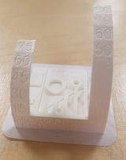

This is my Third project: 3D printing and scanning.
This project was completed in two parts. First, I will go into details how I designed a 3D model and printed it and then I will do the same about how I 3D scanned an object.
3D Printing
The following programs were used to execute this part of the project:
- Fusion 360
-Cura
Determine the constrains of the 3D printer
Determining the constrains of the 3D printer was worked in a group. My groupmembers were Hrannar Þórarinsson, his website and Stefán Már Helgason, his website.
We went on to Thingiverse and found this printertest and decided to use that. We downloaded that file and went to fablab Reykjavik
Since all the 3D printers in fablab would be occupied all day, the day we went there. We were told to see the same thing printed by another group and determine the printers constrains from that object. This is the object that we used

As can be seen, it would not be recommended to print something that has more that a 75° slope or things that are really close together.
Design and printing
I began with deciding what I should design and concluded that a coffee cup, used for pens and pencils, was a nice idea. Next, I designed a prototype based on a YouTube video:
Now I had something I could base my model design on. I watched a YouTube video and used the first part in the video for design where I created the curve on my cup using fit point spline and the revolve command:
Next, I created a new sketch to draw the handle on the cup. I drew two rectangles, like those that represented the handle on the coffee cup from the prototype. Then I used a fit point spline and created a spline on the corner points of the rectangles. After I finished this sketch my design looked like this:
Then I extruded the handle 5mm each way and used the fillet command to round the edges of the handle:
Now all I had to do was making the body hollow and I did that by using the shell command and then I rounded the edges with the fillet command. Now I had a good-looking coffee cup:
But then I noticed the bottom of the handle was a little longer than the cup itself:
To fix this I created a plane and used the extrude command to cut of this part. Now my design was complete. The next step was downloading Cura and saving my body as STL. I watched a YouTube video that showed me recommended settings for Cura. Then I uploaded the model to Cura and sliced it, but it was heavier than 100g. So I used the scale command and used the scale factor 0,75. I uploaded this smaller model to Cura and sliced it with the profile set as 0.2 and 10% infill. Now my design was under 100g and I could start to 3D print it.
I used the Prusa 3D printer. Shortly after I started to 3D print my coffee cup this error came up:
I tried to start again but soon the same error came up so I decided to change some settings in Cura. I added adhesion and support because myself and my teacher thought that might work, the error kept coming up probably because the start of the cup and handle were both on the ground and not connected. By adding adhesion the start of the cup and handle had now the same base. I also added support because the handle might fall off without it. Now it started printing without any interference.
Here is how my coffee cup looked after it had finished printing:
3D Scanning
The following program were used to execute this part of the project:
- 3D Zephyr
I began with finding a object that would be ideal to 3D scan. I found a old trophy in my classroom and took 30 photos from every angel of the object. Here you can see the trophy that I used for this part of the project:
Next I installed 3D Zephyr and uploaded the pictures I took to the program. I chose close range as the category because the trophy was close to the camera when I took the photos and Deep as the presets because that increases the number of keypoints and makes the scan more detailed. Then I extracted the keypoints and only 3 photos of the 30 I took were not used when the program generated a sparse point cloud. The final thing to do was creating a dense point cloud. I did that by using the dense point cloud generation under the workflow bar. I used the settings: close range and high details to get the best quality. This took up to half an hour to run
To showcase the 3D scan I used the keypoints animator in 3D Zephyr to create a 360 view of the object and then I screenrecorded it and here below is the view of the final product:
Time log
| TASK: | TIME: |
| Determining the constraints of the 3D printer | 1.5 hours |
| Finding inspiration for a 3D design | 1 hour |
| Completeing the design in Fusion | 3 hours |
| Studying Cura and using it to slice the object | 1 hour |
| Preparing for 3D printing and fixing errors | 1 hour |
| 3D scanning a object using 3D Zephyr | 3 hours |
| Documentation | 3 hours |
| TOTAL = 13.5 hours |